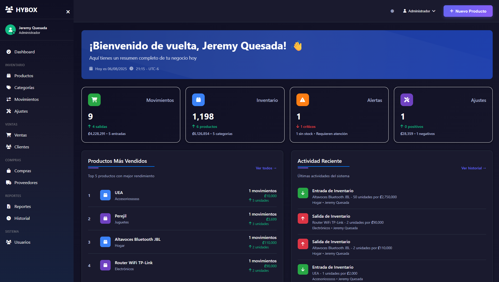
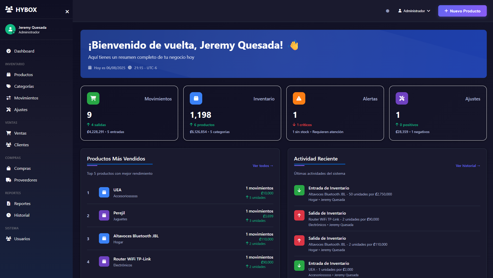
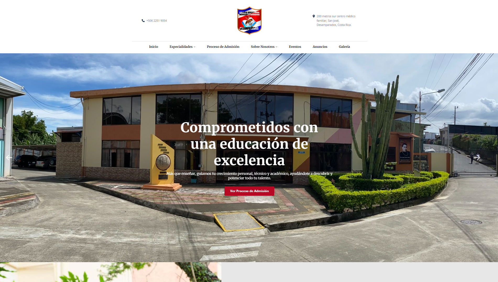
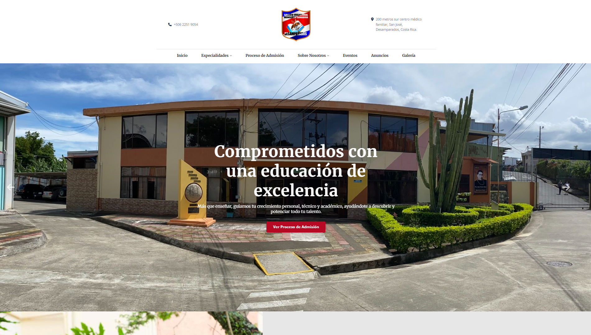

Hi, my name is
JEREMY QUESADA.
Passionate Full Stack Developer focused on building smart and efficient tech solutions. I've been involved in private projects with institutions and companies, always aiming to create fast, functional, and well-crafted tools.
 


 
